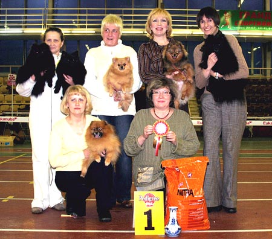
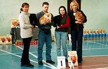
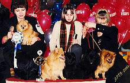
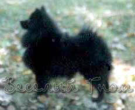
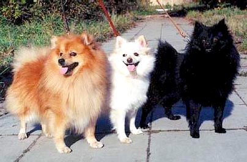

Our kennel is a collective of my close friends who love greatly the most remarkable breed "spitz". Many of them began from taking the first puppy to their house, and today they have two, three, and more Vesely Gnom`s dogs. Due to their efforts and diligence, our kennel became known and popular in our country and abroad. We share everything together: troubles and elation, defeats and victories. I`d like to tell them: Thank you, my dear, for your support and understanding, for great love to breed. I know, you never betray our breed, you never get rid from old or "useless" dog and, even under no circumstances your dogs will never be deprived of your care. THANK YOU! I believe the date of birth of the kennel 1988, is the year of the birth of my first spitz female andthis year I don't change favorite breed. The Result of the work - a victories kennel on the most prestigious dog-show such as:
Our first significant victory-
The Winner " Cup HILL*S-2000 (klein spitz)
Best kennel dog-show of the National Club 2003(zwergspitz)
Best kennel dog-show of the National Club 2006(klein spitz)
|  | |
|
kennel "VESELI GNOM"- "Best kennel 10 dog-show of the National Club 2006" |
|
|  |  |
|
kennel VESELI GNOM (zwergspitz) Best kennel |
dog-show of the National Club 2003 (klein spitz) Winner of the Cup HILL*S-2000(klein spitz) |
The zwerg and klein spitz very popular, compete with any sort and easy wins on such prestigious dog-show, as Championships of the Europe and World.
My first spitzfemale GRACE STEFFI -klein spitz black color, born 1988 year.

she had a wonderful dogs from Germani( DDR) in the pedigree and excellent anatomy, which she will send the descendant; and MANITA (birth 1992), (the owner Perova). MANITA - a klein female, on type approached to zverg. These boughs had in pedigree excellent dogs, export from East Germany and sent the descendant health, excellent wool and correct anatomy.
From STEFFI is received much excellent dogs - a Champion to Russia. From MANITA remained not so much descendants. Amongst them Champion of the Russia, NKP VESELI GNOM MARISYA (the owner Kulikova), VESELI GNOM ULTRA UMA, Champion to Russia VESELI GNOM MITIUS(the owner Pobedinskaya).

From VESELI GNOM ENICHKA there were are received: Ch.Russia, Club VESELI GNOM NADIN, Champion to Russia VESELI GNOM NESTOR MAHNO, Ch.Russia VESELI GNOM NOBBY BOY, but in the same way Ch. Russia, Club VESELI GNOM HLOYA. These dogs give the excellent posterity, amongst which already much Ch. Russia, Club and Interchampion
Certainly for many years the type of dogs has changed in accordance with modern requirements, but the general properties - a correct anatomy,excellent wool and excellent health - kennel saves.
Interesting producers are used In kennel from leading kennel Europe, Kanada and USA.
At present many kennel in its work use the dogs of our breeding. We want him success!